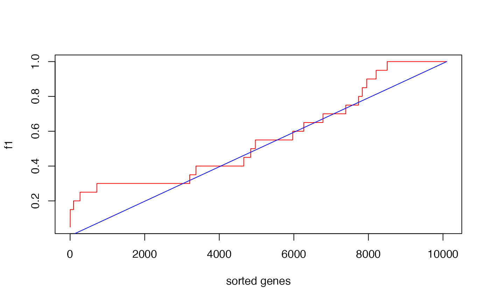
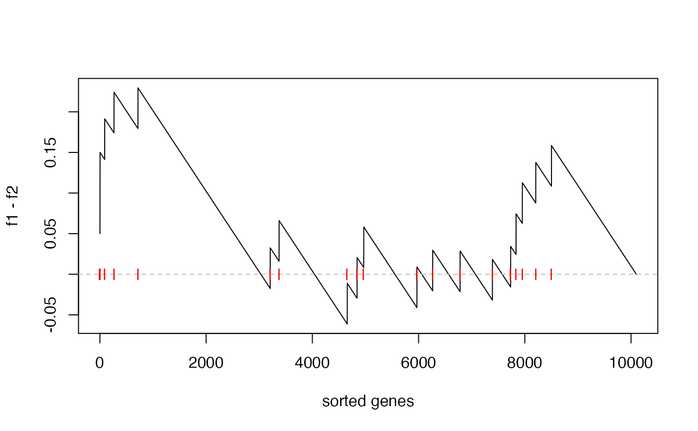
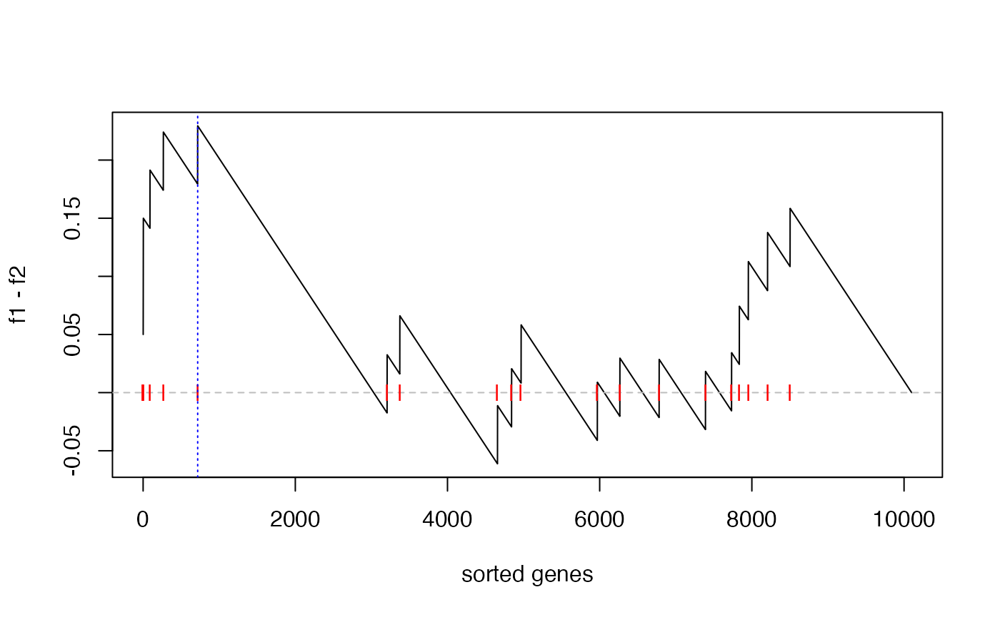
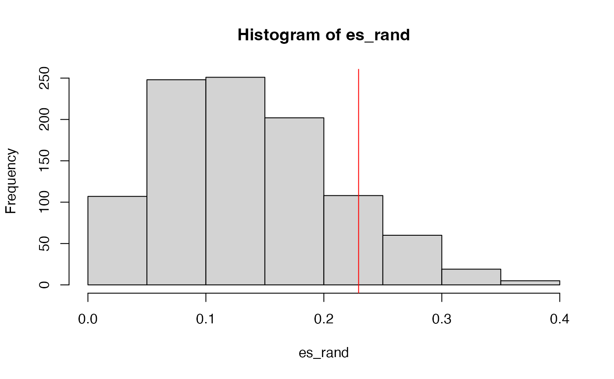
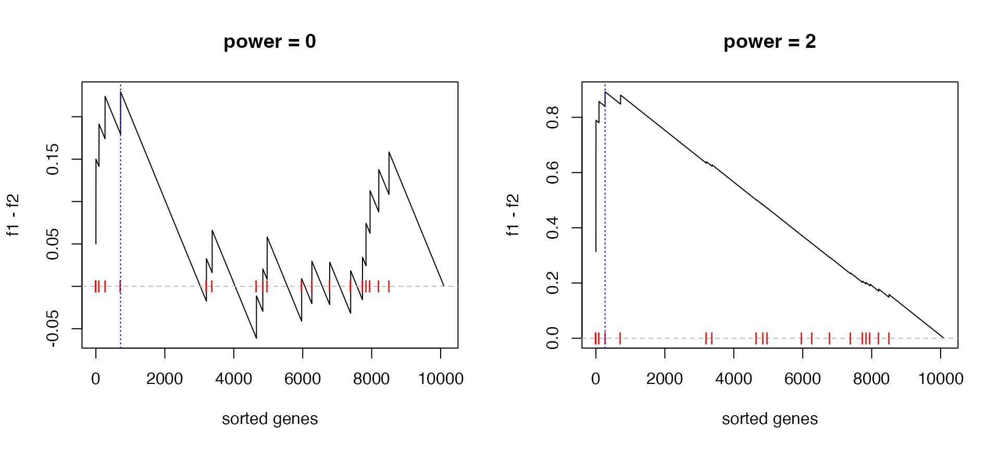
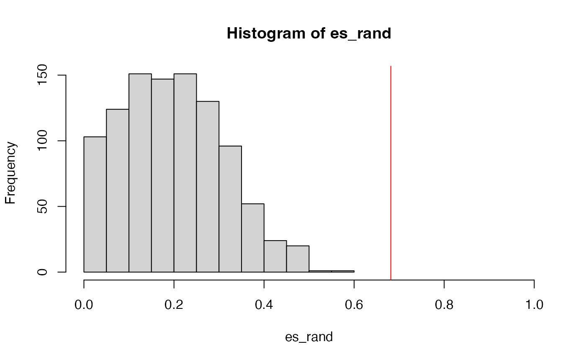
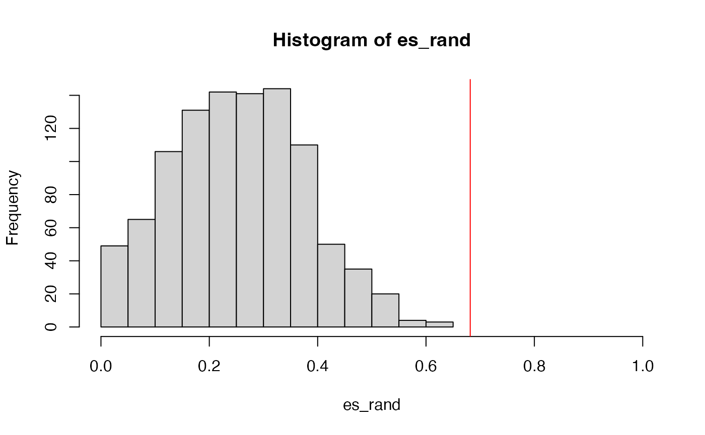

Topic 2-04: Implement GSEA from scratch
Zuguang Gu z.gu@dkfz.de
2024-01-26
Source:vignettes/topic2_04_implement_gsea.Rmd
topic2_04_implement_gsea.RmdIn this document, we will implement the two versions of GSEA in R, using the p53 dataset also from the GSEA paper.
lt = readRDS(system.file("extdata", "p53_expr.rds", package = "GSEAtraining"))
expr = lt$expr
condition = lt$condition
ln = strsplit(readLines(system.file("extdata", "c2.symbols.gmt", package = "GSEAtraining")), "\t")
gs = lapply(ln, function(x) x[-(1:2)])
names(gs) = sapply(ln, function(x) x[1])
geneset = gs[["p53hypoxiaPathway"]]This gene set is very small:
length(geneset)## [1] 20Note here gene IDs in the expression matrix and in the gene set are all gene symbols, thus no more adjustment needs to be done here.
The gene-level difference score is set as signal-to-noise ratios, which is:
- mean in group 1
- mean in group 2
- sd in group 1
- sd in group 2
\[ \frac{\mu_1 - \mu_2}{\sigma_1 + \sigma_2} \]
We calculate the gene-level difference score in s:
s = apply(expr, 1, function(x) {
x1 = x[condition == "WT"]
x2 = x[condition == "MUT"]
(mean(x1) - mean(x2))/(sd(x1) + sd(x2))
})A faster way to calculate s is to use the matrixStats packages.
library(matrixStats)
m1 = expr[, condition == "WT"] # only samples in group 1
m2 = expr[, condition == "MUT"] # only samples in group 2
s = (rowMeans(m1) - rowMeans(m2))/(rowSds(m1) + rowSds(m2)) # gene-level difference scoresSort the gene scores from the highest to the lowest:
s = sort(s, decreasing = TRUE)GSEA version 1
Calculate enrichment score
Next we first implement the original GSEA method, which was proposed in Mootha et al., 2003.
We calculate the cummulative probability of a gene being in a gene set \(G_k\). At position \(p\) in the sorted gene score vector:
\[ f_{1p} = \frac{1}{n_k} \sum_{i=1}^p I(g_i \in G_k) \]
## original GSEA
l_set = names(s) %in% geneset
f1 = cumsum(l_set)/sum(l_set)
## or
binary_set = l_set + 0
f1 = cumsum(binary_set)/sum(binary_set)Here in the calculation of f1, sum(l_set) is \(n_k\), cumsum(l_set) is \(\sum_{i=1}^p I(g_i \in G_k)\).
Similarly, we calculate the cummulative distribution of a gene not in the gene set.
f1 and f2 can be used to plot the CDFs of two distributions.
n = length(s)
plot(1:n, f1, type = "l", col = "red", xlab = "sorted genes")
lines(1:n, f2, col = "blue")
The reason why the blue locates almost on the diagonal is the gene set is very small.
Next the difference of cumulative probability (f1 - f2) at each position of the sorted gene list. Let’s call it “the GSEA plot”.
plot(f1 - f2, type = "l", xlab = "sorted genes")
abline(h = 0, lty = 2, col = "grey")
points(which(l_set), rep(0, sum(l_set)), pch = "|", col = "red")
So, a large value of f1 - f2 means the genes are more like to be in the gene set for those locating at 1..p.
The enrichment score (ES) defined as max(f1 - f2) is:
es = max(f1 - f2)
es## [1] 0.2294643And the position in the “GSEA plot”:
plot(f1 - f2, type = "l", xlab = "sorted genes")
abline(h = 0, lty = 2, col = "grey")
points(which(l_set), rep(0, sum(l_set)), pch = "|", col = "red")
abline(v = which.max(f1 - f2), lty = 3, col = "blue")
The statistic es actually is the Kolmogorov-Smirnov statistics, thus, we can directly apply the KS test where the two vectors for the KS test are the positions on the sorted gene list.
##
## Asymptotic two-sample Kolmogorov-Smirnov test
##
## data: which(l_set) and which(l_other)
## D = 0.22946, p-value = 0.244
## alternative hypothesis: two-sidedHowever, we can see the p-value is not significant, this is because KS test is not a powerful test. Next we construct the null distribution by sample permutation.
Sample permutation
In the next code chunk, the calculation of ES score is wrapped into a function, also we use rowMeans() and rowSds() to speed up the calculation of gene-level scores.
library(matrixStats)
# expr: the complete expression matrix
# condition: the condition labels of samples
# cmp: a vector of two, cmp[1] - cmp[2] > 0 means up-regulation
# geneset: A vector of genes
calculate_es = function(expr, condition, cmp, geneset) {
m1 = expr[, condition == cmp[1]] # only samples in group 1
m2 = expr[, condition == cmp[2]] # only samples in group 2
s = (rowMeans(m1) - rowMeans(m2))/(rowSds(m1) + rowSds(m2)) # a gene-level difference socre (S2N ratio)
s = sort(s, decreasing = TRUE) # ranked gene list
l_set = names(s) %in% geneset
f1 = cumsum(l_set)/sum(l_set) # CDF for genes in the set
l_other = !l_set
f2 = cumsum(l_other)/sum(l_other) # CDF for genes not in the set
max(f1 - f2)
}The ES score calculated by calculate_es():
es = calculate_es(expr, condition, cmp = c("WT", "MUT"), geneset = geneset)
es## [1] 0.2294643We randomly permute sample labels or we randomly permute condition. These two ways are identical. The aim is to break the association between condition and expr.
We do sample permutation 1000 times. The random ES scores are saved in es_rand.
set.seed(123)
es_rand = numeric(1000)
for(i in 1:1000) {
es_rand[i] = calculate_es(expr, sample(condition),
cmp = c("WT", "MUT"), geneset = geneset)
}p-value is calculated as the proportion of values in es_rand being equal to or larger than es.
sum(es_rand >= es)/1000## [1] 0.129The null distribution of ES:

GSEA version 2
Next we implement the improved GSEA (Subramanian et al., PNAS, 2005) where gene-level scores are taken as the weight.
We directly modify calculate_es() to calculate_es_v2() where there is only two lines new, which we highlight in the code chunk:
calculate_es_v2 = function(expr, condition, cmp, geneset, plot = FALSE, power = 1) {
m1 = expr[, condition == cmp[1]]
m2 = expr[, condition == cmp[2]]
s = (rowMeans(m1) - rowMeans(m2))/(rowSds(m1) + rowSds(m2))
s = sort(s, decreasing = TRUE)
l_set = names(s) %in% geneset
# f1 = cumsum(l_set)/sum(l_set) # <<-- the original line
s_set = abs(s)^power # <<-- here
s_set[!l_set] = 0
f1 = cumsum(s_set)/sum(s_set) ## <<- here
l_other = !l_set
f2 = cumsum(l_other)/sum(l_other)
if(plot) {
plot(f1 - f2, type = "l", xlab = "sorted genes")
abline(h = 0, lty = 2, col = "grey")
points(which(l_set), rep(0, sum(l_set)), pch = "|", col = "red")
abline(v = which.max(f1 - f2), lty = 3, col = "blue")
}
max(f1 - f2)
}Now we calculate the new ES score and make the GSEA plot:
es = calculate_es_v2(expr, condition, cmp = c("WT", "MUT"), plot = TRUE,
geneset = geneset)
We can also check when power = 0 and power = 2:
par(mfrow = c(1, 2))
calculate_es_v2(expr, condition, cmp = c("WT", "MUT"), plot = TRUE, power = 0,
geneset = geneset) # same as the original GSEA## [1] 0.2294643
title("power = 0")
calculate_es_v2(expr, condition, cmp = c("WT", "MUT"), plot = TRUE, power = 2,
geneset = geneset)## [1] 0.8925371
title("power = 2")
Similarly, we randomly permute samples to obtain the null distribution of ES:
es_rand = numeric(1000)
for(i in 1:1000) {
es_rand[i] = calculate_es_v2(expr, sample(condition),
cmp = c("WT", "MUT"), geneset = geneset)
}The new p-value:
sum(es_rand >= es)/1000## [1] 0The minimal p-value from 1000 permutations is 1/1000, so zeor here means p-value < 0.001.
And the null distribution of ES:

We can see the improved GSEA is more powerful than the original GSEA, because the original GSEA equally weights genes and the improved GSEA weights genes based on their differential expression, which increases the effect of diff genes. Let’s plot the weight of genes:
GSEA version 2, gene permutation
Null distribution can also be constructed by gene permutation. It is very easy to implement:
# s: a vector of pre-calcualted gene-level scores
# s should be sorted
calculate_es_v2_gene_perm = function(s, geneset, perm = FALSE, plot = FALSE, power = 1) {
if(perm) {
# s is still sorted, but the gene labels are randomly shuffled
# to break the associations between gene scores and gene labels.
names(s) = sample(names(s)) ## <<- here
}
l_set = names(s) %in% geneset
s_set = abs(s)^power
s_set[!l_set] = 0
f1 = cumsum(s_set)/sum(s_set)
l_other = !l_set
f2 = cumsum(l_other)/sum(l_other)
if(plot) {
plot(f1 - f2, type = "l", xlab = "sorted genes")
abline(h = 0, lty = 2, col = "grey")
points(which(l_set), rep(0, sum(l_set)), pch = "|", col = "red")
abline(v = which.max(f1 - f2), lty = 3, col = "blue")
}
max(f1 - f2)
}Good thing of gene permutation is the gene-level scores only need to be calculated once and can be repeatedly used.
# pre-calculate gene-level scores
m1 = expr[, condition == "WT"]
m2 = expr[, condition == "MUT"]
s = (rowMeans(m1) - rowMeans(m2))/(rowSds(m1) + rowSds(m2))
s = sort(s, decreasing = TRUE) # must be pre-sortedThe GSEA plot under gene permutation:
es = calculate_es_v2_gene_perm(s, geneset, plot = TRUE)
We calculate the null distribution of ES from gene permutation:
es_rand = numeric(1000)
for(i in 1:1000) {
es_rand[i] = calculate_es_v2_gene_perm(s, geneset, perm = TRUE)
}
sum(es_rand >= es)/1000## [1] 0The real p-value is also < 0.001.
The null distribution of ES from gene permutation:

Other statistics
Taking es and es_rand calculated previously, NES is calculated as
es/mean(es_rand)## [1] 2.692013NES does not take into account of the dispersion of es_rand, sometimes z-scores is used instead:
(es - mean(es_rand))/sd(es_rand)## [1] 3.483993Practice
Practice 1
We have demonstrated two different ways (sample permutation and gene permutation) for calculating p-values. Apply the p53 dataset on the 50 hallmark gene sets, and compare the two enrichment results (e.g. to check which method tends to generate more signficant p-values).
The code we saw so far only applies to a single gene set, you may need to put it into a for loop to go over each of the 50 hallmark gene sets.
Solution
The Hallmark gene sets from MSigDB
library(GSEAtraining)
gs_hallmark = get_msigdb(version = "2023.2.Hs", collection = "h.all", gene_id_type = "symbol")
n_gs = length(gs_hallmark)Sample permutation:
p1 = numeric(n_gs)
es1 = numeric(n_gs)
nes1 = numeric(n_gs)
z1 = numeric(n_gs)
for(i in 1:n_gs) {
print(i)
geneset = gs_hallmark[[i]]
es1[i] = calculate_es_v2(expr, condition,
cmp = c("WT", "MUT"), geneset = geneset)
es_rand = numeric(1000)
for(k in 1:1000) {
es_rand[k] = calculate_es_v2(expr, sample(condition),
cmp = c("WT", "MUT"), geneset = geneset)
}
p1[i] = sum(es_rand >= es1[i])/1000
nes1[i] = es1[i]/mean(es_rand)
z1[i] = (es1[i] - mean(es_rand))/sd(es_rand)
}## [1] 1
## [1] 2
## [1] 3
## [1] 4
## [1] 5
## [1] 6
## [1] 7
## [1] 8
## [1] 9
## [1] 10
## [1] 11
## [1] 12
## [1] 13
## [1] 14
## [1] 15
## [1] 16
## [1] 17
## [1] 18
## [1] 19
## [1] 20
## [1] 21
## [1] 22
## [1] 23
## [1] 24
## [1] 25
## [1] 26
## [1] 27
## [1] 28
## [1] 29
## [1] 30
## [1] 31
## [1] 32
## [1] 33
## [1] 34
## [1] 35
## [1] 36
## [1] 37
## [1] 38
## [1] 39
## [1] 40
## [1] 41
## [1] 42
## [1] 43
## [1] 44
## [1] 45
## [1] 46
## [1] 47
## [1] 48
## [1] 49
## [1] 50
df1 = data.frame(
geneset = names(gs_hallmark),
es = es1,
nes = nes1,
z = z1,
p_value = p1
)Gene permutation:
m1 = expr[, condition == "WT"]
m2 = expr[, condition == "MUT"]
s = (rowMeans(m1) - rowMeans(m2))/(rowSds(m1) + rowSds(m2))
s = sort(s, decreasing = TRUE) # must be pre-sorted
p2 = numeric(n_gs)
es2 = numeric(n_gs)
nes2 = numeric(n_gs)
z2 = numeric(n_gs)
for(i in 1:n_gs) {
print(i)
geneset = gs_hallmark[[i]]
es2[i] = calculate_es_v2_gene_perm(s, geneset = geneset)
es_rand = numeric(1000)
for(k in 1:1000) {
es_rand[k] = calculate_es_v2_gene_perm(s, geneset = geneset, perm = TRUE)
}
p2[i] = sum(es_rand >= es2[i])/1000
nes2[i] = es2[i]/mean(es_rand)
z2[i] = (es2[i] - mean(es_rand))/sd(es_rand)
}## [1] 1
## [1] 2
## [1] 3
## [1] 4
## [1] 5
## [1] 6
## [1] 7
## [1] 8
## [1] 9
## [1] 10
## [1] 11
## [1] 12
## [1] 13
## [1] 14
## [1] 15
## [1] 16
## [1] 17
## [1] 18
## [1] 19
## [1] 20
## [1] 21
## [1] 22
## [1] 23
## [1] 24
## [1] 25
## [1] 26
## [1] 27
## [1] 28
## [1] 29
## [1] 30
## [1] 31
## [1] 32
## [1] 33
## [1] 34
## [1] 35
## [1] 36
## [1] 37
## [1] 38
## [1] 39
## [1] 40
## [1] 41
## [1] 42
## [1] 43
## [1] 44
## [1] 45
## [1] 46
## [1] 47
## [1] 48
## [1] 49
## [1] 50
df2 = data.frame(
geneset = names(gs_hallmark),
es = es2,
nes = nes2,
z = z2,
p_value = p2
)Compare ES, NES, z-scores, and p-values:
par(mfrow = c(2, 2))
plot(df1$es, df2$es, main = "ES",
xlab = "sample permutation", ylab = "gene permutation")
plot(df1$nes, df2$nes, main = "NES", xlim = c(0, 2.5), ylim = c(0, 2.5),
xlab = "sample permutation", ylab = "gene permutation")
plot(df1$z, df2$z, main = "Z-score",
xlab = "sample permutation", ylab = "gene permutation")
plot(df1$p_value, df2$p_value, main = "P-value",
xlab = "sample permutation", ylab = "gene permutation")